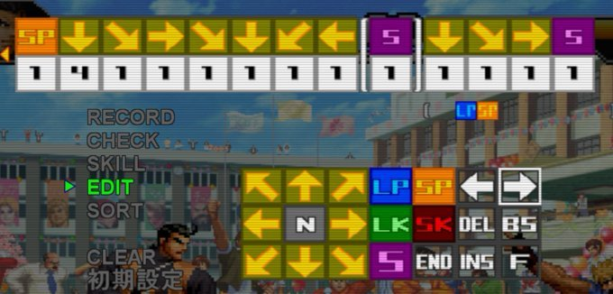

山月記バグ：仕込みで出すMAX版超必殺技の没技（2025年）
KOF2002UMでは、2ゲージのときにMAX版超必殺技のコマンドを入れておく（仕込み）と、MAX発動中に本来は存在しないMAX版超必殺技（没技）を出せます。裏ロバートのMAX版覇王翔吼拳は、暗転も何もなく「ノーモーションでいきなり虎になる」ので、山月記バグと呼ばれています。
この記事の用語
- 仕込み：ゲージが足りずMAX版超必殺技が出ない状態で、そのコマンドを入れておくこと。
- 召喚：仕込んだあと、MAX発動中に没技のMAX版超必殺技を出すこと。
- どこキャン：MAX発動中に、必殺技などをキャンセルして別の技を出すこと。空振りどこキャンは、空振りした技をキャンセルするもの。
- コマンド登録：家庭用のトレーニングで、入力をフレーム単位で登録して再生する機能。
C[1]は「Cを1F入力」の意味です。
原則：仕込んだMAX版超必殺技は、どこキャンでは出せない
仕込みのあとMAX発動すると、仕込んだMAX版超必殺技は出し方によって出たり出なかったりします。
| MAX発動後の出し方 | 仕込んだMAX版超必殺技 |
|---|---|
| 直接出す | 出せる |
| キャンセルで出す | 出せる |
| どこキャンで出す | 出せない |
投稿では、この性質を「どこキャンMAX超必殺技封印」と呼び、「この部分がこのテクニックのキモだと思います。」と書いています。この封印を利用して、空振りした通常技からどこキャンで仕込んだ技のコマンドを入れ（これは出ない）、続けて別の超必殺技のコマンドを入れると、その技がMAX版で出ます。
出し方の流れ
- 2ゲージの状態で、MAX版がある超必殺技（A）のMAX版コマンドを入れる。ゲージが足りないので出ず、遠Aなどが出る。ここで仕込みが入る。
- MAX発動する。
- 通常技などを空振りし、空振りどこキャンでAのMAX版コマンドを入れる。Aは封印されているので出ない。
- 続けて、MAX版が存在しない超必殺技（B）のコマンドの残りを入れる。BのMAX版（没技）が出る。
ポイントは手順4の時点で、手順3のAのコマンドが成立しないようにすることです。裏ロバートの場合は、最後の236+Aのレバーを入れっぱなしにします。召喚するコマンドはノーマル版の入力でよいようです。
レシピ
手順2のMAX発動まで済ませたあとの入力です。
| キャラ | 仕込む技（A） | 出る没技（B） | 入力 |
|---|---|---|---|
| 裏ロバート | 龍虎乱舞MAX | 覇王翔吼拳MAX（虎） | C空振り→MAX版龍虎乱舞のコマンド→236+A（最後の6は入れっぱなし） |
| ジョー | スクリューアッパーMAX（236236+AC） | 爆裂ハリケーンタイガーカカトMAX | 遠C→236236+AC→214+A。最後を4+Aにするのがポイントで、Nだと出ないようです |
| リョウ | 天地覇王拳（236236+AC） | 龍虎乱舞MAX（02バージョン） | 天地覇王拳のコマンドのあと214A。覇王翔吼拳のコマンドでも龍虎乱舞が出るようです |
| テリー | パワーゲイザーMAX（2141236+AC） | ハイアングルゲイザーMAX | 遠D→2141236+AC→236B。パワーゲイザーを大蛇薙コマンドで出して、ハイアングルゲイザーのコマンドと重ねています |
ジョーの例では、236236+ACのあとに214Aを入れると、爆裂ハリケーンタイガーカカトのコマンドが成立します。
裏ロバートのコマンド登録
ほぼ最短の登録は次のとおりです（[ ]内は入力するフレーム数。ACと6+Aは同時入力）。
C[1] 2[4] 3[1] 6[1] 3[1] 2[1] 1[1] 4[1] AC[1] 2[1] 3[1] 6[1] 6+A[1]

仕込みが成功しているかは見た目では分かりません。同じ登録で仕込みをしていなければ普通の技が出るので、入力が合っているかの確認に使えます。
ほかのコマンド登録と、入力タイミングの注意
- しゃがみC空振りから出す版（2025年5月26日）：
2+C[5] 1+C[3] 2[2] 3[2] 6[3] 3[2] 2[1] 1[3] 4[1] 4+AC[1] 7+AC[3] 7+C[1] 4[2] 1[1] 2[1] 3[1] 3+A[2] 6+A[3] N[101] - 短縮版（同日）：
C[1] 2[6] 3[2] 6[3] 3[2] 2[1] 1[3] 4[1] AC[5] 4[2] 1[1] 2[1] 3[1] 6[1] 6+A[5] - 空振りする技によって、入力タイミングが変わるようです。遠C空振りで成立する登録を作ったあと、近Cに変えると全然成立しませんでした。キャンセルできるかどうかで違うのかもしれません。
- 庵でしゃがみCから出そうとすると、MAX版八稚女ばかり出ました。庵のしゃがみCのキャンセル受付時間が長いのだろう、と推測しています。
なぜどこキャンだと入れやすいのか
KOF2002（無印）でも、キムの地上空中鳳凰脚のように、本来出ない超必殺技を出す入力がありました。こちらはスパキャンの受付時間の中で成立させる必要があり、受付は3Fくらいしかないのでシビアでした。
KOF2002UMの山月記バグは空振りどこキャンを使うので、「技の空振り中」と「MAX版超必殺技の受付時間」の両方を満たせばよく、どちらも長いため緩くなっています。MAX版超必殺技を出せる権利のようなフラグが、MAX版超必殺技の受付時間中は残っている説を推しています。海外のプレイヤーの話では、SCでもできるようです。
仕込みが解除される条件
| 解除される | 解除されない |
|---|---|
| 相手の攻撃がヒット・ガード 特殊技・必殺技を出す 通常投げを決める クイック発動（するかも） | 通常技 立CD |
- 仕込むときに4Aや6A（特殊技）が暴発すると解除されてしまいます。
- 空中でも仕込めます。空中で仕込むと、ノーマル版超必殺技の暴発を防ぎやすくなります。
- MAX版超必殺技が出せる状況（2ゲージから発動している、3ゲージ以上ある）では仕込めません。
- クイック発動で解除されるようで、「チンで3ゲージ寸前に仕込んで10割コンボできないかな？と思っていたんですが残念……。」と書いています。
虎（裏ロバートのMAX版覇王翔吼拳）の性質
| 項目 | 結果 |
|---|---|
| 出かた | 超必殺技の暗転がなく、ノーモーションで虎の姿になって突進。虎には影も付いています |
| 当たり方 | なんでも判定と言われるほど当たります。端の相手に近Aを空中ヒットさせたあとでも拾えて、ふっとばし攻撃からも確定します（「なんでも判定すごい。」） |
| 当て身投げ | 打撃判定なので当て身投げされます。香澄の当て身投げでも取れるようです |
| 投げ | 投げられ判定があるので投げも入ります。キャラ限定で通常投げも入ります（通常投げはほかの人の調査）。クーラのラ☆カチョーラは対地投げなので入りそうでしたが、入りませんでした |
| ガードされたとき | 飛び道具判定ではないので、端の相手にガードさせても離れてしまいます（「100%削りできるかと思ったんですが残念」） |
| 食らった側のゲージ | 大きく増えます。体力満タン・ゲージ0のバイスが食らうと約1.6ゲージたまり、KO後も少したまるようです。対戦でKOした京は、次のラウンドで4ゲージたまっていました |
補足：飛び道具も消しているので、打撃と飛び道具の両方の判定が付いているのか、あるいは打撃判定ではなく当て身投げされる判定だけが付いているのかもしれない、と考えています。
実戦での使い道
前提として、相手の攻撃をガードすると仕込みが解けます。そのため「相手の攻撃をガードさせずに自然に仕込む」のがポイントになります。
- 無敵技を読んで後転：相手の強版の無敵技を読んで後転し、後転中にMAX版龍虎乱舞の入力を仕込む→相手が無敵技を出したのを確認→MAX発動→虎。相手の無敵技のモーションの長さ次第で可能性はありそう、としています。
- リスクの少ない仕込み方：後転のほか、バックステップ・後方小JC空振り（どちらも着地硬直に成立させる）・立CD空振りでも仕込めそうです。今は逃げながら虎を狙う人が多いので、立ち回りや攻めの最中に実は仕込んでおく、という考え方です。裏ロバートには連舞脚という強力な起き攻めの選択肢があるので、相手の無敵技を誘いやすいのもポイントです。
- ガークラから：2ゲージで仕込む→MAX発動→Jふっとばし攻撃などでガークラ→着地してふっとばし攻撃→虎。
- 端で拾う：端の相手に強版連舞脚→近A→虎も可能です。
- GC前転をされたとき：裏ロバートが振り向かない状況を作れれば、遠D（相手がガードしてGC前転）→虎もありえます。
大会での扱いについては、「裏ロバは大会では禁止になりそうなんで、これが有効になるのはチンかも。」と書いています。
例外：ほかのキャラの没技は、ほとんどノーマル版と同じ
同じ方法でほかのキャラの没技も出せますが、「裏ロバが面白すぎるだけで、他はなかなかないですね。」とあるとおり、多くはノーマル版とほとんど変わりません。役に立ちそうなのは、リョウ・チン・ユリの3つです。
| キャラ | 没技 | ノーマル版との違い |
|---|---|---|
| リョウ | 龍虎乱舞MAX | 02バージョンのガード不能龍虎乱舞 |
| チン | 轟炎招来MAX強 | 02にもあった強版の性能で、弱版よりダメージが明らかに高く、約9割減ります。02ではオーバーキルでしたが、02UMでは10割に届きません |
| ユリ | 飛燕鳳凰脚MAX | 無敵時間が長い |
| 表ロバート | 覇王翔吼拳MAX | 球が出ません（微妙） |
| 庵 | 裏参百拾壱式・析爪櫛MAX | 暗転なし。最初にしゃがむポーズが入り、ゲーニッツの移動技のような動きをします |
| ビリー | 超火炎旋風棍MAX | 炎を飛ばす部分がなく、ヒットしてもダウンしません |
| ジョー | 爆裂ハリケーンタイガーカカトMAX | 02からある没技。連続ヒットしません |
| 紅丸 | 幻影ハリケーンMAX | 02でも出せた没技。'99と同じ構成かもしれません。ダメージは驚くほど低いです |
| テリー | ハイアングルゲイザーMAX | 音だけMAX版で、ダメージはノーマル版と同じようです |
| アンディ | 斬影流星拳MAX | 音だけMAX版で、ダメージはノーマル版と同じようです |
| 京 | 百八拾弐式MAX | 音以外はノーマル版と同じようです |
| キング | サプライズローズMAX | 音以外はノーマル版と同じようです |
| 香澄 | 超重ね当てMAX | ノーマル版と見分けがつきません。同じ登録で仕込みをしていないと超当て身が出るので、入力自体は合っているようです |
| 表タクマ | 真・鬼神撃MAX | 見た目はノーマル版と同じです |
| KUSANAGI | 千九百九拾九式・霧焔MAX | 見た目はノーマル版と同じです |
| チャン | 鉄球大暴走MAX／鉄球大撲殺MAX | 内容はノーマル版と同じようです |
| レオナ | リボルスパークMAX | 成功していないかもしれません。覚醒中でも変わりませんでした |
召喚のボタンは弱ボタンで調べています。チンのように強版で性能が変わる技もあるので、強ボタンでは違う結果になる可能性があります。ヒット数が変わっている技もそこそこあるようです。ほかに、「02と同じなら幻影ハリケーンとケンスウの神龍天舞脚もいけると思います。ユリのはそこまでダメージが上がらないのが痛いですね。」とも書いています。
チンの強版轟炎招来は、KOF2002では特殊版轟炎招来として知られていたものです。KOF2002UMでも出ることを確かめていて（02ほどのダメージではなさそう）、コマンド登録では屈B→特殊版轟炎招来は連続技にならないので、ノーガード設定で試すよう書いています。
似ているが別の話
- KOF2002（無印）の隠し超必殺技：スパキャンの受付時間中にMAX2などと別の超必殺技の入力を続けて成立させると、キムの地上空中鳳凰脚のような本来出ない技が出ます。山月記バグの源流にあたる現象で、最初に見つかったのが地上空中鳳凰脚です。→ スーパーキャンセルと複合入力で発生する特殊版の技
- 竜巻槍打バグ：香澄の竜巻槍打を受けた相手の技が、暗転なしの超必殺技になる現象です。暗転が出ない点は似ていますが、仕込みは関係ありません。→ 竜巻槍打バグ
- 前の入力で版が変わる技：KOF'98の大門の裏投げのように、前に入れたコマンドの記録で技の版が変わる技があります。最初に出せない状態で仕込む点は、この大門の仕込みに近いのかもしれない、としています。→ 前の入力で版が変わる技
- 特殊技のキャンセル版：特殊技をキャンセル版にする話にも似ていますが、あちらはキャンセルで仕込む必要がある点が違います。
- 包のいくよキャン：山月記バグや、02のチンの特殊版轟炎招来に弱版・強版があることは、いくよキャンとも関係していそうだ、と2025年6月に書いています。→ 包のいくよキャン
気になること
- 「多分発生もムチャクチャ早そうですよね。1フレかも。」（2025年5月24日）。虎の発生フレームはまだ測っていません。
- 「もしかして、虎を食らって時間切れになった場合、こっちはKOされないのでゲージMAXまでたまる？」チーム戦で、KOした相手のゲージが基本的にMAXまでたまるのかも要確認です。
- 「後は、「生発動→虎」が空中追撃に間に合えば……」
- 「仕込みがどういう状況で可能なのかも気になります。遠Aが出る必要があるのか。」遠Aが出なくても仕込めるなら、硬直などに仕込んで生発動からポンポン出せるかも、と書いています。空中で仕込めることは確かめています。
- 「MAX2でも仕込める」と書いたあと、「すみません、02UMだと天地覇王拳はMAX2じゃないんですね。他のMAX2で試してみます。」と訂正しています。MAX2での仕込みと、体力が多いときに3ゲージ以上でも仕込めるかは確かめられていません。
- 強ボタンで召喚した場合に、ほかのキャラの没技の性能が変わるかは未確認です。
- 「果たして山月記バグは禁止されるのか🤔」
名前の由来と、見つかった経緯
2025年5月24日、裏ロバートが虎になる動画が話題になり、No.17さん（@17rotd）が再現しました。No.17さんの説明は、2ゲージのときにMAX龍虎乱舞のコマンドを入れて（ミスで遠Aが出る）、そのあとどこキャンかSCでMAX龍虎乱舞を入力し、素早く236Aを入れると虎になる、というものでした。KOF2002のキムの三空SCと同じ原理で上書きしているようだ、とも書かれています。動画のキー表示では236C→63214AC→236Aの流れになっていました。
この情報をもとに、翌25日に仕込みと召喚の流れを整理し、リョウやチンでも出せることを確かめています。名前は、「山月記かよ」という感想が多かったので付けた、としています。
出典（X投稿・ブログ）
- 2025/5/24：動画のキー表示／発生は1Fかも（No.17さんの元の投稿：@17rotd）
- 2025/5/25：特殊版の出し方／直接・キャンセル・どこキャン／裏ロバートの236A／大まかな流れ／ジョーの例／リョウ／特殊版轟炎招来／轟炎招来のコマンド登録／MAX2／天地覇王拳の訂正／香澄の当て身投げ／飛び道具も消す／ゲージ（バイス）／時間切れ／ゲージ（京）／幻影ハリケーン・神龍天舞脚／名前／仕込みの条件／影／封印がキモ／スパキャンと空振りどこキャン／その補足
- 2025/5/26：生発動→虎／端でガード／しゃがみC版／入力タイミング／GC前転／短縮版／空中の仕込み／SC／テリー／テリーの出し方／アンディ／ジョー／ジョーの出し方／入力のポイント
- 2025/5/27：最短のコマンド登録／暗転なし／庵／庵のしゃがみC／香澄／香澄の入力／ビリー／キング／レオナ／京／紅丸／リョウの召喚コマンド／チン／表タクマ／KUSANAGI／他はなかなかない
- 2025/5/28～31：弱ボタンで調査／チャン（大暴走）／チャン（大撲殺）／なんでも判定／受付時間中のフラグ／名前の由来／KOF2002との違い／ガークラから／禁止されるのか／いいこと考えた（後転で仕込む）／端で近Aから拾う／強版連舞脚→近A→虎／解除条件
- 2025/6：ラ☆カチョーラ／当て身投げ／投げ／通常投げ／いくよキャンとの関係／クイック発動で解除／役に立ちそうな没技
- KOF2002のチン：KOF2002 チンの特殊テクニック：特殊版轟炎招来（KOF勢共有ブログ、2024年8月31日）
- 源流の動画：【KOF02】真・隠し超必まとめ（ALXさん）／地上ＭＡＸ鳳凰脚（ponZaさん）